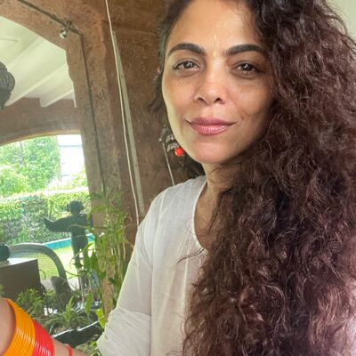

Doctor-Verified
All in Hindi. All free. Always.
She didn't die because medicine failed her. She died because no one had told her what to look for.
Eight years ago, a house staff member came to work with red eyes. His wife had delivered a baby boy two days earlier. But something had gone wrong. She was bleeding — severely. The family was frightened.
They didn't call a doctor. They called someone to remove the nazar.
For two days, while she hemorrhaged, rituals were performed. By the time anyone understood what was actually happening medically, it was too late. She died. Young. A new mother. From something that is, in most cases, treatable.
If she had known what postpartum hemorrhage looked like — if anyone in that family had seen one video explaining the warning signs — the outcome might have been different.
That's when Jananam Media and SuperMummy began.
Before SuperMummy made a single video, we spent two weeks in the maternity wards of small-town Rajasthan — Ajmer, Alwar, Jhunjhunu. Watching. Listening. Running research groups with pregnant women and their mothers-in-law.
She had a question. She didn't ask it. The ward was too crowded, the doctor too rushed, the prescription unreadable. That night she searched for the answer on her husband's phone.
Every SuperMummy video is built for that moment. A question. Her question. A doctor who answers it. In a simple clinic — the kind she actually walks into, not the kind that looks good on camera.
The format is called Dr Se Poocho — Ask the Doctor. It has been criticised for not looking polished enough. We kept it anyway. Because she doesn't walk into fancy. She walks into real.
The Audience
64% of our viewers come from towns
YouTube doesn't name.
We call them Her Bharat.
Patna. Lucknow. Indore. Agra. Varanasi.
And then — beyond the analytics — hundreds of towns
that don't appear in any dashboard.
This is not an underserved audience.
This is the audience.

Chanda Chaudhary
Founder, Jananam Media Pvt. Ltd.
SuperMummy was built by a woman who has never been pregnant. Because sometimes the clearest eyes belong to the witness, not the patient.
Chanda has spent eight years building the platform she wishes had existed for the woman who didn't survive. She is not difficult to reach.
If you're here because someone sent you a link —
we're glad you stayed.
If something on this page made you curious, that curiosity is worth a conversation.
Let's Build Together →